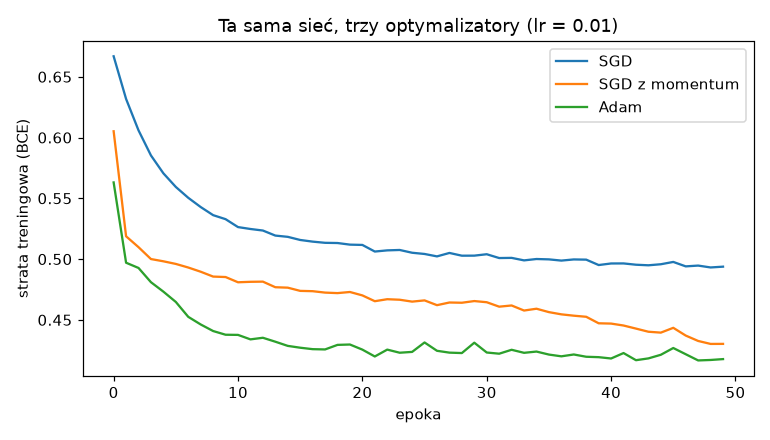
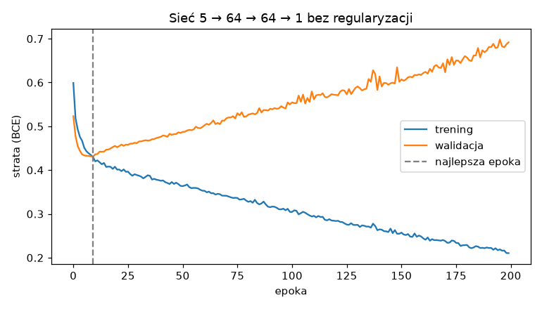
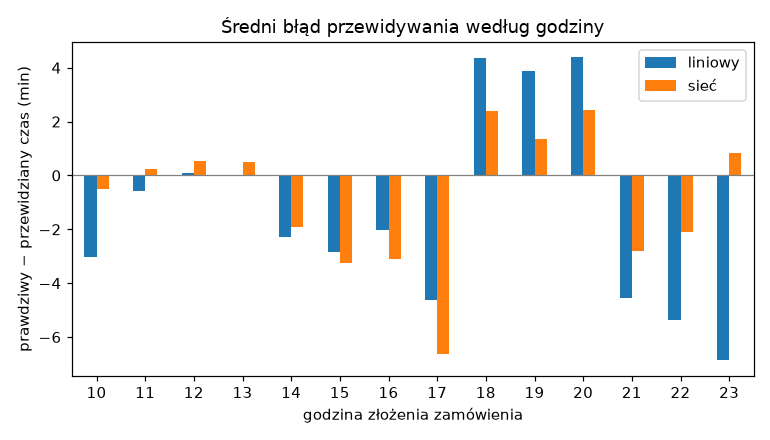

Zajęcia 6#
Trening w praktyce — optymalizatory, regularyzacja i funkcje straty#
Na poprzednich zajęciach zostawiliśmy dwa problemy. Pierwszy: duża sieć 5 → 64 → 64 → 1 nauczyła się danych na pamięć i na teście wypadła gorzej niż jeden neuron. Drugi, mniej widoczny: zwykły spadek gradientu (SGD) jest powolny i bardzo czuły na współczynnik uczenia. Dziś naprawiamy oba. Poznasz trzy pokrętła, które ustawia każdy, kto trenuje sieci: optymalizator, regularyzację i funkcję straty.
Przy funkcji straty wyjdziemy wreszcie poza klasyfikację. Sieć nie musi odpowiadać „tak/nie" — może przewidywać liczbę. Na danych MeritoEats z dzisiejszych zajęć z DS w Pythonie zbudujemy sieć, która przewiduje, ile minut potrwa dostawa.
Po dzisiejszych zajęciach będziesz w stanie:
- porównać SGD, SGD z momentum i Adam i wybrać rozsądny punkt startu,
- zatrzymać trening we właściwym momencie i odzyskać najlepsze wagi (wczesne zatrzymanie),
- zastosować weight decay i dropout i wyjaśnić, dlaczego działają,
- pamiętać o
model.train()imodel.eval(), - dobrać ostatnią warstwę i funkcję straty do zadania — klasyfikacji albo regresji,
- zbudować sieć do regresji w PyTorch i ocenić ją średnim błędem w minutach.
Przykłady z zajęć w Colabie
Cały materiał z tej strony jest też w gotowym notatniku — z kodem do uruchomienia. Otwórz go i uruchamiaj komórki po kolei, czytając materiał. Żeby zachować swoje zmiany, zapisz kopię: Plik → Zapisz kopię na Dysku.

Godzinę temu na Data Science w Pythonie
Robiliśmy mini-projekt dla MeritoEats. Wyszło, że oceny spadają nie przez długie dostawy, tylko przez niedotrzymane obietnice, a aplikacja obiecuje ten sam czas o 15:00 i o 19:00. Dziś sprawdzimy, czy sieć neuronowa przewidzi czas dostawy lepiej niż wzór, którego używa aplikacja.
Plan na dziś#
| Blok | Czas |
|---|---|
Nowa wersja funkcji trenuj |
3 min |
| Optymalizatory — SGD, momentum, Adam | 8 min |
| Wczesne zatrzymanie | 7 min |
| Weight decay i dropout | 10 min |
| Funkcje straty — klasyfikacja i regresja | 5 min |
| Sieć do regresji — czas dostawy | 10 min |
| Ściągawka | 2 min |
| Zadanie 6 | 45 min |
Przygotowanie#
Dane#
Pierwsza część zajęć to znowu siłownia — te same trzy zbiory co na zajęciach 5:
import copy
import numpy as np
import pandas as pd
import matplotlib.pyplot as plt
import torch
from torch import nn
from torch.utils.data import TensorDataset, DataLoader
from sklearn.model_selection import train_test_split
from sklearn.preprocessing import StandardScaler
from sklearn.metrics import log_loss, f1_score, mean_absolute_error
URL = "https://kubzal.github.io/wsb-merito/semestr_zimowy_2026_27/uczenie_glebokie/dane/silownia_czyste.csv"
df = pd.read_csv(URL)
cechy = ["wiek", "oplata_mies", "staz_mies", "wizyty_mies", "zgloszenia"]
X_train, X_test, y_train, y_test = train_test_split(
df[cechy], df["zrezygnowal"], test_size=0.2, random_state=42, stratify=df["zrezygnowal"])
X_tr, X_val, y_tr, y_val = train_test_split(
X_train, y_train, test_size=0.2, random_state=42, stratify=y_train)
scaler = StandardScaler().fit(X_tr)
X_tr_t = torch.tensor(scaler.transform(X_tr), dtype=torch.float32)
X_val_t = torch.tensor(scaler.transform(X_val), dtype=torch.float32)
X_test_t = torch.tensor(scaler.transform(X_test), dtype=torch.float32)
y_tr_t = torch.tensor(y_tr.values, dtype=torch.float32).view(-1, 1)
y_val_t = torch.tensor(y_val.values, dtype=torch.float32).view(-1, 1)
dane = (X_tr_t, y_tr_t, X_val_t, y_val_t)
dane to po prostu cztery tensory spakowane razem, żeby nie przepisywać ich
przy każdym wywołaniu.
Nowa wersja funkcji trenuj#
Funkcja z zajęć 5 sama tworzyła optymalizator i stratę. Dziś będziemy je zmieniać, więc podajemy je z zewnątrz. Dochodzą też dwie rzeczy, które wyjaśnimy za chwilę — oznaczone w komentarzach:
def trenuj(model, dane, funkcja_straty, optymalizator, epoki=100, cierpliwosc=None):
X_tr_t, y_tr_t, X_val_t, y_val_t = dane
paczki = DataLoader(TensorDataset(X_tr_t, y_tr_t), batch_size=32, shuffle=True)
historia_tr, historia_val = [], []
najlepsza_strata, najlepsze_wagi, bez_poprawy = float("inf"), None, 0
for epoka in range(epoki):
model.train() # tryb treningu (dropout)
suma = 0
for xb, yb in paczki:
optymalizator.zero_grad()
strata = funkcja_straty(model(xb), yb)
strata.backward()
optymalizator.step()
suma += strata.item()
historia_tr.append(suma / len(paczki))
model.eval() # tryb oceny (dropout)
with torch.no_grad():
strata_val = funkcja_straty(model(X_val_t), y_val_t).item()
historia_val.append(strata_val)
if strata_val < najlepsza_strata: # wczesne zatrzymanie
najlepsza_strata, bez_poprawy = strata_val, 0
najlepsze_wagi = copy.deepcopy(model.state_dict())
else:
bez_poprawy += 1
if cierpliwosc is not None and bez_poprawy >= cierpliwosc:
break
if cierpliwosc is not None:
model.load_state_dict(najlepsze_wagi) # wracamy do najlepszej epoki
return historia_tr, historia_val
def ocen(model, X_t, y):
model.eval()
with torch.no_grad():
p = model(X_t).numpy().ravel()
return round(log_loss(y, p), 3), round(f1_score(y, (p > 0.5).astype(int)), 3)
Środek — pięć kroków w pętli po paczkach — jest dokładnie taki jak na zajęciach 5.
Optymalizatory#
SGD, momentum i Adam#
Optymalizator to „ten, który robi kroki" — decyduje, jak na podstawie
gradientu zmienić wagi. Do tej pory używaliśmy najprostszego, SGD: krok =
współczynnik uczenia × gradient. Wytrenujmy tę samą sieć 5 → 8 → 1 trzema
optymalizatorami, z tym samym lr=0.01:
for nazwa in ["SGD", "SGD z momentum", "Adam"]:
torch.manual_seed(42)
siec = nn.Sequential(nn.Linear(5, 8), nn.ReLU(), nn.Linear(8, 1), nn.Sigmoid())
if nazwa == "SGD":
optymalizator = torch.optim.SGD(siec.parameters(), lr=0.01)
elif nazwa == "SGD z momentum":
optymalizator = torch.optim.SGD(siec.parameters(), lr=0.01, momentum=0.9)
else:
optymalizator = torch.optim.Adam(siec.parameters(), lr=0.01)
historia_tr, historia_val = trenuj(siec, dane, nn.BCELoss(), optymalizator, epoki=50)
plt.plot(historia_tr, label=nazwa)
print(f"{nazwa:15} strata po 5 epokach: {historia_tr[4]:.3f} po 50: {historia_tr[-1]:.3f}")
plt.legend()
plt.title("Ta sama sieć, trzy optymalizatory (lr = 0.01)")
plt.xlabel("epoka")
plt.ylabel("strata treningowa (BCE)")
SGD strata po 5 epokach: 0.571 po 50: 0.494
SGD z momentum strata po 5 epokach: 0.498 po 50: 0.430
Adam strata po 5 epokach: 0.473 po 50: 0.418

- SGD z
lr=0.01ledwo się rusza — po 50 epokach jest tam, gdzie Adam był po kilku. Na zajęciach 5 działał, bo daliśmy mu dziesięć razy większy krok. - Momentum („pęd") dodaje do każdego kroku część poprzedniego. Wracamy do
schodzenia z góry we mgle: zamiast stawiać każdy krok od zera, toczysz się
jak kula — na długim, łagodnym zboczu nabierasz prędkości, a drobne nierówności
nie zbijają Cię z kursu.
momentum=0.9to wartość, którą prawie wszyscy zostawiają. - Adam idzie dalej: oprócz pędu pilnuje osobnej długości kroku dla każdej
wagi. Waga, której gradient jest zwykle malutki, dostaje większy krok, a ta,
której gradient skacze — mniejszy. Dzięki temu jest dużo mniej czuły na wybór
lr.
Od czego zacząć
W praktyce prawie każdy zaczyna od Adama z lr=0.001 — to wartość
domyślna w PyTorch i zwykle działa od razu. Dopiero gdy krzywa uczenia
wygląda źle, zmieniasz lr kilkukrotnie w górę albo w dół. SGD z momentum
wciąż spotkasz przy dużych sieciach do obrazów — bywa tam odrobinę lepszy,
ale wymaga cierpliwego strojenia.
Wczesne zatrzymanie#
Przeuczenie jeszcze raz#
Wracamy do dużej sieci z zajęć 5 — tym razem z Adamem i przez 200 epok:
def duza_siec():
torch.manual_seed(42)
return nn.Sequential(
nn.Linear(5, 64), nn.ReLU(),
nn.Linear(64, 64), nn.ReLU(),
nn.Linear(64, 1), nn.Sigmoid(),
)
siec = duza_siec()
optymalizator = torch.optim.Adam(siec.parameters(), lr=0.001)
historia_tr, historia_val = trenuj(siec, dane, nn.BCELoss(), optymalizator, epoki=200)
print("najniższa strata walidacyjna w epoce:", np.argmin(historia_val))
print("bez regularyzacji strata, F1:", ocen(siec, X_test_t, y_test))
plt.plot(historia_tr, label="trening")
plt.plot(historia_val, label="walidacja")
plt.axvline(np.argmin(historia_val), color="gray", linestyle="--", label="najlepsza epoka")
plt.legend()
plt.title("Sieć 5 → 64 → 64 → 1 bez regularyzacji")
plt.xlabel("epoka")
plt.ylabel("strata (BCE)")

Ten sam obraz co tydzień temu: po kilku epokach krzywa walidacyjna zawraca. Wszystko, co sieć „nauczyła się" po przerywanej linii, to zapamiętywanie szumu.
Zatrzymaj, zanim będzie za późno#
Najprostsze lekarstwo widać na wykresie: przerwać trening, kiedy strata
walidacyjna przestaje spadać, i wrócić do wag z najlepszej epoki. To jest
wczesne zatrzymanie (early stopping). W naszej funkcji robi je parametr
cierpliwosc:
- po każdej epoce sprawdzamy, czy strata walidacyjna jest najniższa
z dotychczasowych — jeśli tak, zapamiętujemy kopię wag
(
copy.deepcopy(model.state_dict())), - jeśli przez
cierpliwoscepok z rzędu nie było poprawy — przerywamy, - na koniec wczytujemy zapamiętane wagi (
model.load_state_dict(...)).
Cierpliwość jest potrzebna, bo krzywa walidacyjna jest poszarpana — jedna gorsza epoka nie znaczy jeszcze, że sieć zaczęła się przeuczać.
siec = duza_siec()
optymalizator = torch.optim.Adam(siec.parameters(), lr=0.001)
historia_tr, historia_val = trenuj(siec, dane, nn.BCELoss(), optymalizator, epoki=200, cierpliwosc=10)
print("trening trwał epok:", len(historia_val), "| najlepsza:", np.argmin(historia_val))
print("wczesne zatrzymanie strata, F1:", ocen(siec, X_test_t, y_test))
Zamiast 200 epok — kilkanaście, a strata na teście spadła z prawie 0.6 do ok. 0.43. Darmowa poprawa: krótszy trening i lepszy model.
state_dict — wagi sieci w słowniku
model.state_dict() zwraca wszystkie wagi i biasy sieci jako słownik
{nazwa_warstwy: tensor}. copy.deepcopy robi z niego niezależną
kopię — bez tego „zapamiętane" wagi zmieniałyby się razem z siecią. Tym
samym słownikiem zapisuje się wytrenowaną sieć do pliku:
torch.save(model.state_dict(), "siec.pt").
Weight decay i dropout#
Wczesne zatrzymanie przerywa trening, zanim sieć zacznie się uczyć na pamięć. Dwie kolejne metody sprawiają, że w ogóle trudniej jej się uczyć na pamięć. Wszystkie trzy nazywa się wspólnie regularyzacją.
Weight decay — kara za duże wagi#
Sieć, która zapamiętuje pojedynczych klientów, potrzebuje do tego
ogromnych wag — żeby jeden mały szczegół zmieniał wynik o 180 stopni.
Weight decay (dosłownie „zanik wag") w każdym kroku lekko ściąga wszystkie
wagi w stronę zera. Waga zostaje duża tylko wtedy, gdy naprawdę pomaga na
wielu przykładach. To ta sama regularyzacja, którą LogisticRegression
stosowała domyślnie na zajęciach 4.
W PyTorch to jeden parametr optymalizatora:
siec = duza_siec()
optymalizator = torch.optim.Adam(siec.parameters(), lr=0.001, weight_decay=0.01)
historia_tr, historia_val = trenuj(siec, dane, nn.BCELoss(), optymalizator, epoki=200)
print("najniższa strata walidacyjna w epoce:", np.argmin(historia_val))
print("weight decay 0.01 strata, F1:", ocen(siec, X_test_t, y_test))
Tym razem nie przerywaliśmy treningu, a sieć i tak się nie przeuczyła — najlepsza epoka wypadła daleko, a nie po kilku krokach.
Dropout — losowe wyłączanie neuronów#
Dropout działa inaczej: w każdym kroku treningu losowo wyłącza część neuronów warstwy ukrytej — np. połowę. W kolejnym kroku wyłącza inną połowę. Sieć nie może więc polegać na żadnym pojedynczym neuronie i musi rozłożyć wiedzę na wiele z nich. Trochę jak drużyna, w której na każdy trening przychodzi losowa połowa zawodników — wszyscy muszą umieć grać na kilku pozycjach.
Dropout to osobna warstwa, którą wstawia się za aktywacją:
def duza_siec_dropout(p):
torch.manual_seed(42)
return nn.Sequential(
nn.Linear(5, 64), nn.ReLU(), nn.Dropout(p),
nn.Linear(64, 64), nn.ReLU(), nn.Dropout(p),
nn.Linear(64, 1), nn.Sigmoid(),
)
siec = duza_siec_dropout(0.5)
optymalizator = torch.optim.Adam(siec.parameters(), lr=0.001)
historia_tr, historia_val = trenuj(siec, dane, nn.BCELoss(), optymalizator, epoki=200)
print("dropout 0.5 strata, F1:", ocen(siec, X_test_t, y_test))
nn.Dropout(0.5) wyłącza w każdym kroku losowe 50% wyjść poprzedniej warstwy.
Typowe wartości to 0.2–0.5.
model.train() i model.eval()
Dropout ma działać tylko w czasie treningu. Przy ocenie i przewidywaniu
chcemy pełnej sieci, z wszystkimi neuronami. Przełącza to
model.train() (dropout włączony) i model.eval() (wyłączony). Nasze
funkcje trenuj i ocen robią to same — ale jeśli kiedyś będziesz liczyć
przewidywania „ręcznie", zacznij od model.eval(). Zapomniane przełączenie
to jeden z najczęstszych błędów: wyniki są wtedy losowo gorsze i za każdym
razem inne.
Porównanie#
| Duża sieć 5 → 64 → 64 → 1 | Strata na teście |
|---|---|
| bez regularyzacji, 200 epok | ok. 0.59 |
| wczesne zatrzymanie | ok. 0.43 |
| weight decay 0.01 | ok. 0.41 |
| dropout 0.5 | ok. 0.40 |
| dla porównania: mała sieć 5 → 8 → 1 z zajęć 5 | ok. 0.42 |
Każda z trzech metod naprawiła przeuczenie, a duża sieć z regularyzacją wyszła tak dobra jak mała — albo minimalnie lepsza. W praktyce stosuje się je razem: trochę dropoutu, trochę weight decay i zawsze wczesne zatrzymanie jako pas bezpieczeństwa.
Funkcje straty#
Strata zależy od tego, co przewidujesz#
Do tej pory zawsze przewidywaliśmy klasę (odejdzie / nie odejdzie) — sigmoida na końcu i strata BCE. Ale sieć może też przewidywać liczbę: czas dostawy, cenę mieszkania, sprzedaż w przyszłym tygodniu. To regresja — znasz ją z zajęć 2 razem z metrykami MAE i RMSE. Zmieniają się wtedy dwie rzeczy: ostatnia warstwa i funkcja straty.
| Zadanie | Przykład | Ostatnia warstwa | Strata | Metryka dla ludzi |
|---|---|---|---|---|
| klasyfikacja binarna | odejdzie czy nie | Linear(…, 1) + Sigmoid() |
nn.BCELoss() |
F1, precision, recall |
| regresja | ile minut potrwa dostawa | Linear(…, 1) bez aktywacji |
nn.MSELoss() albo nn.L1Loss() |
MAE, RMSE |
| klasyfikacja wieloklasowa | która z 10 cyfr | Linear(…, 10) |
nn.CrossEntropyLoss() |
accuracy |
W regresji na końcu nie ma sigmoidy — ona ścisnęłaby wynik do przedziału 0–1, a dostawa trwa 35 minut, nie 0.35. Ostatni neuron zwraca po prostu ważoną sumę, czyli dowolną liczbę.
MSELoss— średni kwadrat błędu. Pomyłka o 10 minut kosztuje 100, o 20 minut — 400. Mocno karze duże pomyłki.L1Loss— średni błąd bez kwadratu, czyli dokładnie MAE. Spokojniej traktuje pojedyncze wartości odstające.
Klasyfikacją wieloklasową zajmiemy się na zajęciach 7, przy obrazkach.
A BCEWithLogitsLoss?
W cudzym kodzie zobaczysz zwykle nn.BCEWithLogitsLoss() i sieć bez
sigmoidy na końcu. To to samo co sigmoida + BCELoss, tylko połączone
w jedną funkcję, która liczy się dokładniej przy bardzo pewnych
przewidywaniach (p = 0.99999). Przy takim kodzie prawdopodobieństwo
dostajesz przez torch.sigmoid(model(X)). My zostajemy przy sigmoidzie
w modelu, bo tak łatwiej czytać kod.
Sieć do regresji — czas dostawy#
Dane MeritoEats#
dostawy_czyste.csv to oba miesiące z DS w Pythonie, wyczyszczone
i połączone z restauracjami. Cechy budujemy jak na zajęciach 5 z DS
— godzina, weekend, pogoda jako flagi, kuchnia jako one-hot:
URL_DOSTAWY = "https://kubzal.github.io/wsb-merito/semestr_zimowy_2026_27/uczenie_glebokie/dane/dostawy_czyste.csv"
dost = pd.read_csv(URL_DOSTAWY, parse_dates=["data_godzina"])
dost["godzina"] = dost["data_godzina"].dt.hour
dost["weekend"] = (dost["data_godzina"].dt.day_of_week >= 5).astype(int)
dost["deszcz"] = (dost["pogoda"] == "deszcz").astype(int)
dost["snieg"] = (dost["pogoda"] == "śnieg").astype(int)
dost = pd.concat([dost, pd.get_dummies(dost["kuchnia"], prefix="kuchnia", dtype=int)], axis=1)
cechy_d = (["odleglosc_km", "liczba_pozycji", "wartosc_zl", "godzina", "weekend", "deszcz", "snieg"]
+ [k for k in dost.columns if k.startswith("kuchnia_")])
print(len(dost), "zamówień,", len(cechy_d), "cech")
Kolumny ocena nie bierzemy — klient wystawia ją po dostawie, więc to
wyciek. Nie bierzemy też obiecany_czas_min: to wynik wzoru aplikacji,
z którym chcemy się porównać.
Skalujemy także cel#
Podział robimy jak zawsze, tylko bez stratify — to ma sens przy klasach, a nie
przy minutach. Nowość: oprócz cech skalujemy też zmienną celu.
X_train, X_test, y_train, y_test = train_test_split(
dost[cechy_d], dost["czas_dostawy_min"], test_size=0.2, random_state=42)
X_tr, X_val, y_tr, y_val = train_test_split(X_train, y_train, test_size=0.2, random_state=42)
scaler_d = StandardScaler().fit(X_tr)
srednia, odchylenie = y_tr.mean(), y_tr.std()
print("średni czas dostawy:", round(srednia, 1), "min, odchylenie:", round(odchylenie, 1), "min")
def X_na_tensor(X):
return torch.tensor(scaler_d.transform(X), dtype=torch.float32)
def y_na_tensor(y):
return torch.tensor(((y - srednia) / odchylenie).values, dtype=torch.float32).view(-1, 1)
dane_d = (X_na_tensor(X_tr), y_na_tensor(y_tr), X_na_tensor(X_val), y_na_tensor(y_val))
X_test_d = X_na_tensor(X_test)
Dlaczego? Świeża sieć zwraca liczby bliskie zera, a prawidłowa odpowiedź to
ok. 37 minut. Zanim sieć zacznie się uczyć czegokolwiek ciekawego, musiałaby
długo „dojeżdżać" do trzydziestu kilku — Adam robi małe kroki, więc zajęłoby
to dziesiątki epok, a wynik zależałby od przypadku. Po skalowaniu cel ma
średnią 0 i odchylenie 1, czyli sieć startuje blisko dobrej odpowiedzi.
Przewidywania zamieniamy z powrotem na minuty: p * odchylenie + srednia.
Model liniowy i sieć#
Trenujemy dwa modele: jeden neuron bez aktywacji (czyli zwykła regresja
liniowa) i sieć z warstwą ukrytą. Funkcja trenuj jest ta sama — zmienia się
tylko strata:
def przewidz_minuty(model, X_t):
model.eval()
with torch.no_grad():
return model(X_t).numpy().ravel() * odchylenie + srednia
torch.manual_seed(42)
liniowy = nn.Linear(len(cechy_d), 1)
trenuj(liniowy, dane_d, nn.MSELoss(), torch.optim.Adam(liniowy.parameters(), lr=0.001), cierpliwosc=10)
torch.manual_seed(42)
siec_d = nn.Sequential(nn.Linear(len(cechy_d), 32), nn.ReLU(), nn.Linear(32, 1))
trenuj(siec_d, dane_d, nn.MSELoss(), torch.optim.Adam(siec_d.parameters(), lr=0.001), cierpliwosc=10)
p_liniowy = przewidz_minuty(liniowy, X_test_d)
p_siec = przewidz_minuty(siec_d, X_test_d)
print("średnia dla wszystkich MAE:", round(mean_absolute_error(y_test, np.full(len(y_test), srednia)), 2), "min")
print("model liniowy MAE:", round(mean_absolute_error(y_test, p_liniowy), 2), "min")
print("sieć 13 → 32 → 1 MAE:", round(mean_absolute_error(y_test, p_siec), 2), "min")
MAE czyta się wprost: o ile minut średnio myli się model. Przewidywanie „każda dostawa potrwa średnio 37 minut" myli się o 9 minut. Model liniowy — o ok. 5. Sieć jest lepsza o mniej więcej pół minuty. Skąd ta różnica?
Gdzie myli się model liniowy#
Policzmy średni błąd (prawdziwy czas minus przewidziany) osobno dla każdej godziny:
bledy = pd.DataFrame({
"godzina": X_test["godzina"].values,
"liniowy": y_test.values - p_liniowy,
"sieć": y_test.values - p_siec,
})
bledy.groupby("godzina")[["liniowy", "sieć"]].mean().plot(
kind="bar", title="Średni błąd przewidywania według godziny")
plt.axhline(0, color="gray", linewidth=0.8)
plt.xticks(rotation=0)
plt.xlabel("godzina złożenia zamówienia")
plt.ylabel("prawdziwy − przewidziany czas (min)")

Model liniowy ma dla godziny jedną wagę, więc umie powiedzieć tylko „im później, tym dłużej" (albo krócej). Wieczorny szczyt 18–20 jest dla niego niewidoczny — w szczycie zaniża czas o ok. 4 minuty, a po 21:00 zawyża go o 5–7 minut. Sieć zauważyła, że szczyt to szczyt: w godzinach 18–20 jej błąd jest mniej więcej o połowę mniejszy, a późnym wieczorem prawie znika. Idealna nie jest — o 17:00 myli się nawet bardziej niż model liniowy, bo zamówień z tej godziny jest mało. Ten sam mechanizm co z wizytami na siłowni tydzień temu, tylko teraz w minutach.
Ściągawka#
| Chcę… | Kod |
|---|---|
| Adam (dobry start) | torch.optim.Adam(model.parameters(), lr=0.001) |
| SGD z momentum | torch.optim.SGD(model.parameters(), lr=0.01, momentum=0.9) |
| weight decay | torch.optim.Adam(model.parameters(), lr=0.001, weight_decay=0.01) |
| dropout | nn.Dropout(0.3) za nn.ReLU() |
| tryb treningu / oceny | model.train() / model.eval() |
| kopia wag | copy.deepcopy(model.state_dict()) |
| wczytać zapamiętane wagi | model.load_state_dict(wagi) |
| trening z wczesnym zatrzymaniem | trenuj(model, dane, strata, optymalizator, epoki=200, cierpliwosc=10) |
| klasyfikacja binarna | Linear(…, 1) + Sigmoid(), nn.BCELoss() |
| regresja | Linear(…, 1) bez aktywacji, nn.MSELoss() albo nn.L1Loss() |
| skalowanie celu w regresji | (y - srednia) / odchylenie, z powrotem: p * odchylenie + srednia |
| błąd w jednostkach celu | mean_absolute_error(y_test, p) |
| podział bez stratify (regresja) | train_test_split(X, y, test_size=0.2, random_state=42) |
Zadanie 6 — Regularyzacja i czas dostawy (6 pkt)#
Czas: maks. 45 minut
Środowisko: Google Colab
Oddanie: notatnik .ipynb na Moodle
Dwa krótkie zlecenia. Pierwsze od zespołu IT MeritoBanku: tydzień temu ich sieć przegrała z neuronem, ale twierdzą, że to dlatego, że nie znali regularyzacji. Drugie od zespołu produktu MeritoEats: czy sieć przewidzi czas dostawy lepiej niż wzór, którego dziś używa aplikacja?
Na początku notatnika wpisz swój numer albumu — od niego zależy siła dropoutu
w części 1 i kuchnia w części 2 (ta sama co na DS w Pythonie). Do notatnika
skopiuj też z notatek importy oraz funkcje trenuj i ocen. Komórka startowa
części 1 przygotowuje dane kredytowe tak jak w zadaniu 5:
NR_ALBUMU = 123456 # ← wpisz swój numer albumu
MOJE_P = [0.2, 0.3, 0.5][NR_ALBUMU % 3]
KUCHNIE = ["pizza", "burgery", "sushi", "kebab", "azjatycka", "polska"]
MOJA_KUCHNIA = KUCHNIE[NR_ALBUMU % 6]
print("Mój dropout:", MOJE_P, "| moja kuchnia:", MOJA_KUCHNIA)
URL_KREDYTY = "https://kubzal.github.io/wsb-merito/semestr_zimowy_2026_27/data_science_w_pythonie/dane/kredyty_2026.csv"
kr = pd.read_csv(URL_KREDYTY)
kr["rata"] = kr["kwota_kredytu"] / kr["okres_mies"]
kr["obciazenie"] = kr["rata"] / kr["dochod_mies"]
kr["mial_opoznienia"] = (kr["opoznienia_12m"] > 0).astype(int)
kr = pd.concat([kr, pd.get_dummies(kr["cel_kredytu"], prefix="cel", dtype=int)], axis=1)
cechy_kr = ["wiek", "dochod_mies", "staz_pracy_lat", "kwota_kredytu", "okres_mies",
"inne_kredyty", "opoznienia_12m", "rata", "obciazenie", "mial_opoznienia",
"cel_gotówkowy", "cel_konsolidacyjny", "cel_remont", "cel_samochodowy"]
X_train_k, X_test_k, y_train_k, y_test_k = train_test_split(
kr[cechy_kr], kr["niesplacony"], test_size=0.2, random_state=42, stratify=kr["niesplacony"])
X_tr_k, X_val_k, y_tr_k, y_val_k = train_test_split(
X_train_k, y_train_k, test_size=0.2, random_state=42, stratify=y_train_k)
scaler_k = StandardScaler().fit(X_tr_k)
X_t = lambda X: torch.tensor(scaler_k.transform(X), dtype=torch.float32)
y_t = lambda y: torch.tensor(y.values, dtype=torch.float32).view(-1, 1)
dane_k = (X_t(X_tr_k), y_t(y_tr_k), X_t(X_val_k), y_t(y_val_k))
X_test_kt = X_t(X_test_k)
Rób części po kolei i pokaż mi wynik każdej części, gdy będzie gotowa.
Część 1 — czy regularyzacja uratuje sieć? (ok. 20 min)#
- Zbuduj sieć 14 → 64 → 1 (ReLU, sigmoida na wyjściu) i wytrenuj ją Adamem
(
lr=0.001) przez 100 epok bez regularyzacji. Narysuj krzywą treningową i walidacyjną i policz wynik na teście funkcjąocen. - Zbuduj tę samą sieć z
nn.Dropout(MOJE_P)za ReLU i wytrenuj ją zweight_decay=0.01i wczesnym zatrzymaniem (cierpliwosc=10, maks. 100 epok). Narysuj krzywe, podaj, po ilu epokach trening się zatrzymał, i policz wynik na teście. - Wytrenuj tak samo (Adam, 100 epok, bez regularyzacji) jeden neuron na tych 14 cechach. Zestaw trzy modele w tabeli i odpowiedz w komórce tekstowej zespołowi IT: czy regularyzacja pomogła sieci i czy to wystarczyło, żeby pobiła neuron?
Część 2 — czas dostawy (ok. 25 min)#
- Przygotuj dane MeritoEats dokładnie jak w sekcji „Sieć do regresji" (cechy,
podział, skalowanie cech i celu) i wytrenuj sieć 13 → 32 → 1 do
regresji:
nn.MSELoss(), Adamlr=0.001,cierpliwosc=10. Policz MAE na teście w minutach. - Porównaj sieć na tym samym zbiorze testowym z dwoma punktami odniesienia:
przewidywaniem średnią i obietnicą aplikacji (
obiecany_czas_min). Policz też średni błąd aplikacji ze znakiem (prawdziwy − obiecany): czy aplikacja częściej zaniża, czy zawyża czas? - Powtórz porównanie MAE sieci i aplikacji tylko dla zamówień z Twojej kuchni w zbiorze testowym. W komórce tekstowej napisz 2–3 zdania do zespołu produktu: czy warto zastąpić wzór siecią — w całej aplikacji i w Twojej kuchni?
Wskazówki#
- Sieć z dropoutem:
nn.Sequential(nn.Linear(14, 64), nn.ReLU(), nn.Dropout(MOJE_P), nn.Linear(64, 1), nn.Sigmoid()). Przed budową każdego modelutorch.manual_seed(42). - Liczba epok, po których zatrzymał się trening, to
len(historia_val). - W części 1 dane to
dane_k, test toX_test_ktiy_test_k, czyli np.ocen(siec, X_test_kt, y_test_k). - Wyniki zapisuj w zmiennych, zanim przejdziesz dalej — przydadzą się do tabeli.
- Obietnica aplikacji dla zamówień testowych:
dost.loc[X_test.index, "obiecany_czas_min"]—X_testpamięta numery wierszy zdost. - Zamówienia z Twojej kuchni w teście: maska
moje = (dost.loc[X_test.index, "kuchnia"] == MOJA_KUCHNIA).values, potemy_test[moje],p_siec[moje]. - Średni błąd ze znakiem:
(y_test - obietnica).mean()— dodatni znaczy, że dostawy trwają dłużej, niż obiecano.
Punktacja (6 pkt)#
| Punkty | Za co |
|---|---|
| 6 pkt | obie części zrobione na zajęciach i pokazane prowadzącemu |
| 4 pkt | jedna z dwóch części zrobiona na zajęciach |
| 2 pkt | zadanie dokończone po zajęciach i wysłane na Moodle w terminie |
| 0 pkt | brak rozwiązania albo wysłane po terminie |
Termin przesłania na Moodle: dzień przed kolejnymi zajęciami.
Serio, róbcie to na zajęciach
Te same 45 minut pracy jest warte 6 pkt tu i teraz albo 2 pkt w domu. Przez cały semestr robi to różnicę 32 punktów, czyli całej oceny w górę lub w dół.